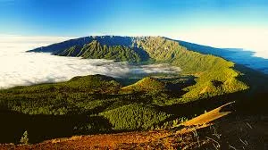
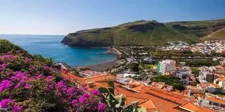
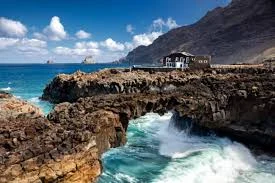
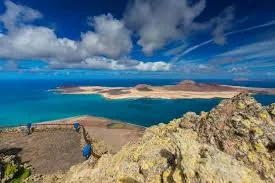

DESCUBRE EL ARCHIPIÉLAGO
Ocho islas.
Un mismo océano.
Cada isla tiene su ritmo, su costa y su forma de acercarse al Atlántico.

4 spots en la guía
Gran Canaria
Ciudad, costa y olas con carácter.

3 spots en la guía
Tenerife
Del norte atlántico al viento del sur.

3 spots en la guía
Lanzarote
El océano encuentra el paisaje volcánico.

3 spots en la guía
Fuerteventura
Arena, viento y horizontes abiertos.

Explorar el territorio
La Palma
Una costa para conocer despacio.

Explorar el territorio
La Gomera
El mar, a otra escala.

Explorar el territorio
El Hierro
Volcán y Atlántico, sin atajos.

Explorar el territorio
La Graciosa
Un pequeño territorio, un gran océano.